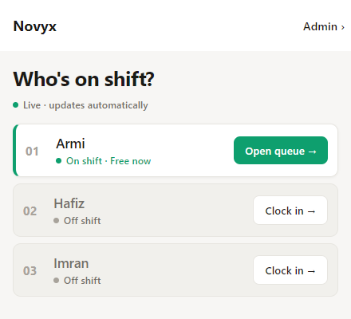
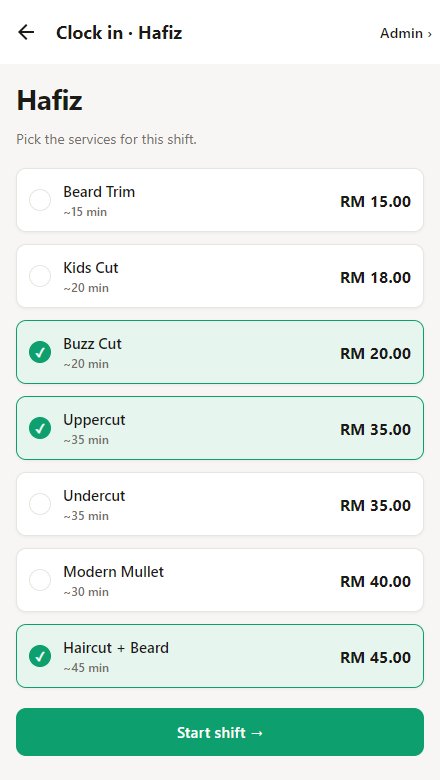
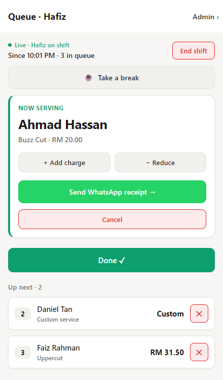
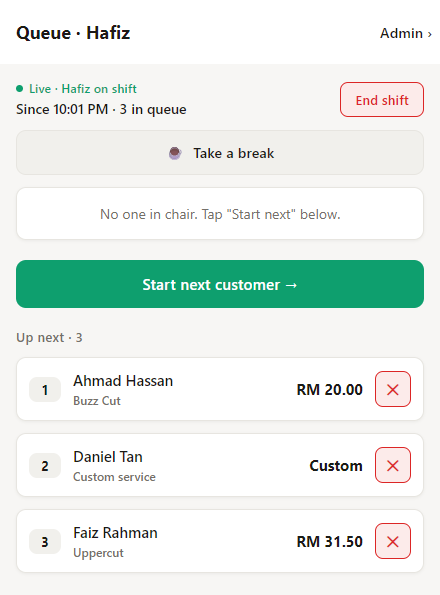
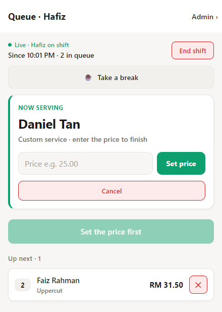
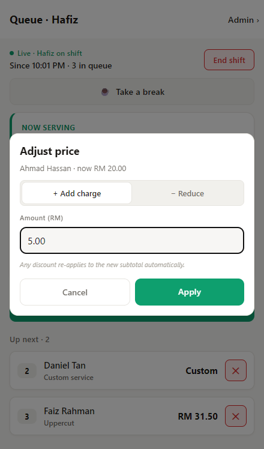
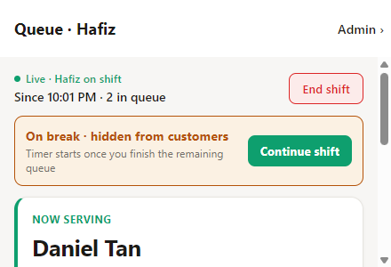

Everything you need to run your chair — clock in, manage your queue, set prices, send receipts, and clock out.
For: Barbers using the shop tablet No login needed: just tap your name and go Version: 1.0 · Issued: June 2026
Keep this handy at the counter
NOVYX · BARBER GUIDEIntroduction
Welcome
Before you start
This handbook shows you how to use the Novyx tablet at your chair. It's simple: you tap your name, choose what you're cutting today, and the app keeps your queue in order while you work.
You don't need a password or an account. The tablet stays on the staff screen all day, and anyone working picks their own name to open their queue. Each chapter is short, with a picture and the exact buttons to tap.
The one rule
Tap your own name only. Everything you do — cuts, prices, breaks — is recorded under the name you pick, and that's how your pay is worked out. The Admin › link in the top corner is for the shop owner; you don't need it.
Your day in five steps
Pick your name on the tablet.
Clock in — choose the services you'll do today.
Serve customers — start the next person, cut, tap done.
Take breaks when you need to — you'll be hidden from new customers.
End your shift when you're finished.
NOVYX · BARBER GUIDEContents
Contents
What's inside
1Find your name & open your queue
2Clock in — pick your services
3Your queue screen, explained
4Serving customers
5Prices, discounts & receipts
6Cancelling a customer
7Taking a break
8Ending your shift
AButton cheat-sheet & tips
NOVYX · BARBER GUIDE1 · Find your name
Chapter 1
Find your name & open your queue
What this is: The home screen on the shop tablet. Everyone working picks their name here.

"Who's on shift?" — tap your name to begin.
Each barber has a row. The coloured dot tells you their status at a glance:
What you see
What it means
On shift · Free now
Working, with no one waiting. Tap Open queue → to see your chair.
On shift · X in queue
Working, with customers waiting. The number is how many.
Off shift
Not started yet. Tap Clock in → to start your shift.
Find your name in the list.
If you haven't started yet, tap Clock in → (go to Chapter 2).
If you're already on shift, tap Open queue → to jump straight to your customers.
Good to know
This page updates by itself — the green "Live · updates automatically" line means you never need to refresh it.
NOVYX · BARBER GUIDE2 · Clock in
Chapter 2
Clock in — pick your services
What this is: Before customers can choose you, tell the app which cuts you're offering today.

Tap the services you'll do — selected ones turn green with a tick.
Tap each service you'll offer this shift. Tap again to unselect. Pick as many as you like.
Selected services turn green with a tick✓.
When you're happy, tap Start shift →.
Heads up
You must pick at least one service. If you tap Start shift → with none selected, you'll see "Pick services — Select at least one service for this shift."
Why it matters
Customers only see — and can only book — the services you tick here. If you don't offer beard trims today, leave that one unticked and no one can pick it.
NOVYX · BARBER GUIDE3 · Your queue screen
Chapter 3
Your queue screen, explained
What this is: Your main screen for the whole shift. Everything you need is here.

The queue screen while serving a customer.
From top to bottom:
Area
What it shows
Live · [you] on shift
Confirms you're clocked in, when you started, and how many people are waiting.
End shift
Top-right. Finishes your shift (Chapter 8).
☕ Take a break
Hide yourself from new customers for a while (Chapter 7).
Now serving
The customer in your chair right now, their service and price, and the buttons to finish or change the price.
Big green button
The main button at the bottom. It changes depending on what's happening — see Chapter 4.
Up next · X
The waiting list, in order. Each row shows the name, service and price.
You don't add customers
Customers add themselves by scanning the shop's QR code and picking you. They appear in your Up next list automatically — you just serve them in order.
NOVYX · BARBER GUIDE4 · Serving customers
Chapter 4
Serving customers
What this is: The simple loop you repeat all day — start the next person, cut, tap done.

People waiting in "Up next". The big button reads "Start next customer →".
When your chair is empty, tap Start next customer →. The first person in Up next moves into Now serving.
Cut their hair.
When you're finished, tap Done ✓. They're checked out and the next person can begin.
Tap Start next customer → again for the next one, and so on.
The big green button always tells you what to do next:
Button says
Meaning
Start next customer →
Your chair is empty and someone is waiting. Tap to begin them.
Done ✓
Someone's in your chair and the price is set. Tap to finish & check out.
Set the price first
A custom-price customer is in your chair — enter their price before you can finish (Chapter 5).
No one waiting
Your queue is empty. Nothing to do but wait for the next customer.
NOVYX · BARBER GUIDE5 · Prices & receipts
Chapter 5
Prices, discounts & receipts
What this is: How to set or change what a customer pays, and how to text them a receipt.
5.1 Custom-price customers
Some customers choose "Custom service" because they're not sure what they want — you decide the price. They show as Custom in the queue, and when they're in your chair you'll see a price box.

Type the price, tap "Set price", then "Done ✓".
Type the amount in the Price e.g. 25.00 box.
Tap Set price. The big button changes from "Set the price first" to Done ✓.
Tap Done ✓ to finish.
5.2 Adding or reducing a charge
For any customer you can nudge the price up or down — for example a little extra for beard work, or a small discount for a quick trim. Tap + Add charge or − Reduce on the customer.

The "Adjust price" box — choose add or reduce, type the amount, tap Apply.
Choose + Add charge (more) or − Reduce (less).
Type the Amount (RM).
Tap Apply. The new price shows on the customer straight away.
You can also tap the price on anyone in the Up next list to adjust it before they even sit down.
About discount codes
If a customer entered a promo code when they joined, the discount is already applied — you'll see it noted on their card. If you add or reduce a charge, the discount re-calculates on the new amount automatically. You don't do anything extra.
5.3 Sending a WhatsApp receipt
After a cut you can text the customer a tidy receipt. On the customer in your chair, tap Send WhatsApp receipt →. WhatsApp opens with the service, price and queue number already written — just hit send.
If nothing happens
You'll need WhatsApp on the device. If it's missing you'll see "WhatsApp not installed — Install WhatsApp to send receipts." Sending a receipt is optional; it doesn't affect checking the customer out.
NOVYX · BARBER GUIDE6 · Cancelling
Chapter 6
Cancelling a customer
What this is: Removing someone who left, no-showed, or was added by mistake — without charging them.
6.1 Someone waiting in the queue
Find them in the Up next list.
Tap the red ✕ on their row.
Confirm "Cancel [name]? — Removes them from the queue."
6.2 Someone already in your chair
On the Now serving card, tap Cancel.
Confirm "Cancel [name]? — No commission will be recorded."
Cancel vs. DoneDone ✓ means the cut happened and the customer paid — it counts toward your earnings. Cancel means nothing was charged and nothing is recorded. Only tap Done ✓ for cuts you actually finished.
NOVYX · BARBER GUIDE7 · Breaks
Chapter 7
Taking a break
What this is: Step away for a rest, prayer, or lunch. New customers can't pick you while you're on break.

While on break you're hidden from customers. Tap "Continue shift" to come back.
Tap ☕ Take a break near the top of your queue screen.
A banner shows On break · hidden from customers. New customers can no longer choose you.
When you're ready, tap Continue shift to start taking customers again.
You'll see
Meaning
Resting since HH:MM
Your break time is being counted from this moment (your chair was empty).
Timer starts once you finish the remaining queue
You still have customers waiting — finish them first, then your break time begins.
Breaks are yours
Taking a break doesn't end your shift — you stay clocked in. It just stops new people from joining your line while you're away.
NOVYX · BARBER GUIDE8 · Ending your shift
Chapter 8
Ending your shift
What this is: Clocking out at the end of the day.
Tap End shift at the top-right of your queue screen.
You stop appearing to new customers, and your hours stop counting.
If anyone is still in your line, you can finish them — the screen shows "Shift ended · finishing remaining" until your queue is clear.
Finish your current customer first
If someone is in your chair, tap Done ✓ (or Cancel) before you end your shift, so their cut is recorded correctly.
That's it
Once your queue is empty after ending, you're clocked out. The tablet returns to the staff list, ready for the next barber.
NOVYX · BARBER GUIDEAppendix A · Cheat-sheet
Appendix A
Button cheat-sheet & tips
A.1 The dots on the staff list
Dot
Meaning
Green
On shift, free — no one waiting.
Amber
On shift, with customers in the queue.
Grey
Off shift — not started yet.
A.2 Every button, in one place
Button
What it does
Clock in →
Start your shift (pick services first).
Open queue →
Open your chair when already on shift.
Start shift →
Begin your shift after choosing services.
Start next customer →
Bring the next waiting person into your chair.
Done ✓
Finish the cut and check the customer out (counts for your pay).
Set price
Lock in the price for a custom-service customer.
+ Add charge / − Reduce
Nudge a customer's price up or down.
Send WhatsApp receipt →
Text the customer their receipt (optional).
☕ Take a break / Continue shift
Pause / resume taking new customers.
Cancel / ✕
Remove a customer without charging them.
End shift
Clock out for the day.
A.3 Quick tips
Always pick your own name — your cuts and pay depend on it.
Serve in order: Start next customer →, cut, Done ✓, repeat.
Use Done ✓ only for real, finished cuts. Use Cancel for no-shows.
Custom customer? Set the price before you can tap Done.
Going away for a bit? Take a break so no one new joins your line.
Don't worry about the Admin › link — that's for the owner.
NOVYX BARBERSHOP · BARBER GUIDE (STAFF MODE) · v1.0 · JUNE 2026 · END OF DOCUMENT